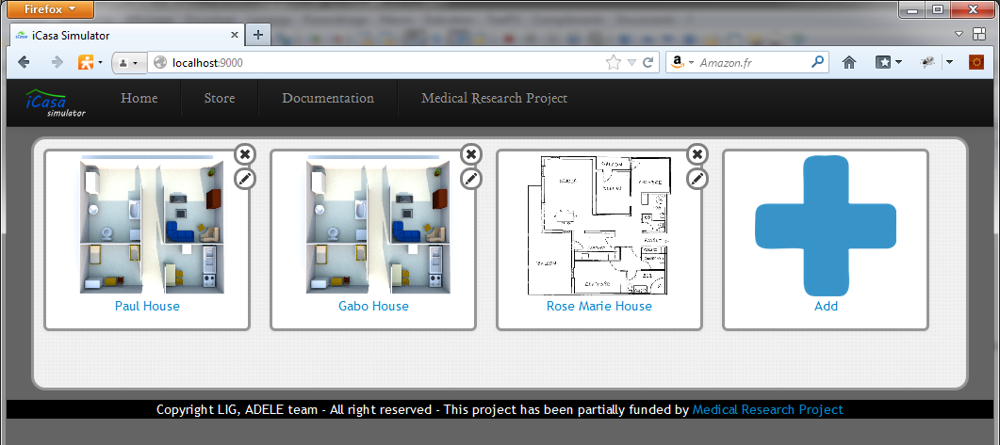
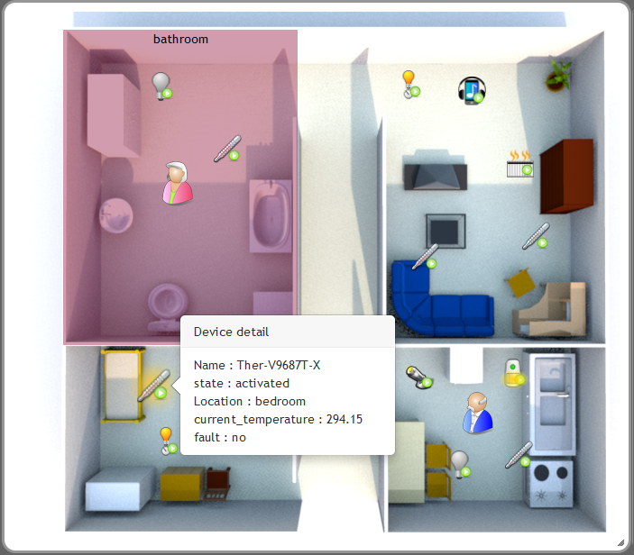
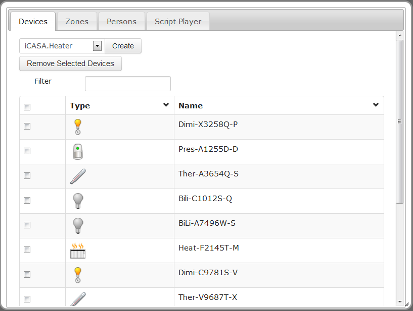
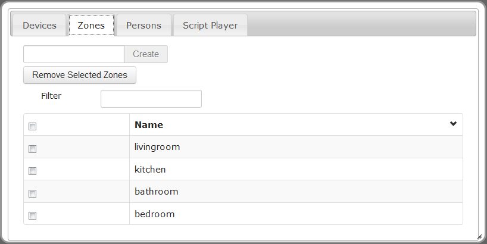
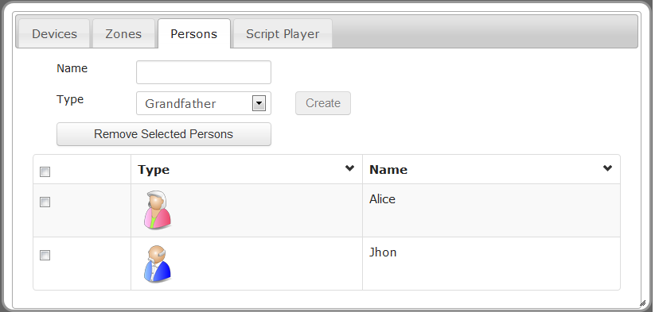
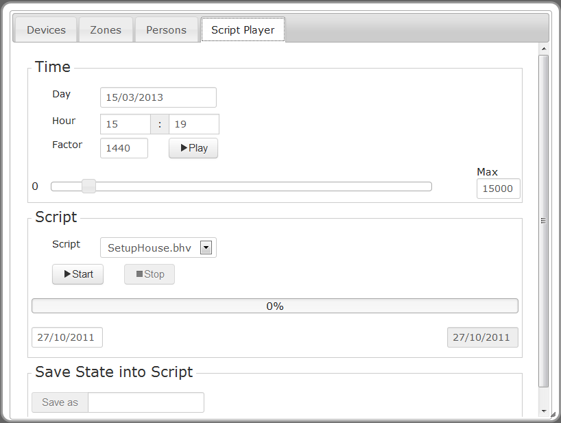

The simulator module of iCasa platform provides a web interface for interaction with the server side (gateway). In the home page the user can select a simulation platform of the list. To access (locally) the home page in your browser go to this url : http://localhost:9000.
Once one platform selected, the simulator main interface is displayed. The main interface is divided in two sections: the map section presents the house plan, and the actions section shows information about the execution state of the iCasa platform and allows user to modify it.
In this page the user can add a simulation platform, edit it or remove it. Platforms will persist in the GUI server and can be reused among different server executions. Each simulation platform has to define an unique ID, a name, the platform URL and a house map (png file). The platform list is presented as in the next image.

The user picks a platform to start the main interface of the simulator, shown in the next image. Users can also go directly to simulator main interface using the url pattern http://localhost:9000/map/$platformID, for example to access the default platform that have the id default the user have to go to http://localhost:9000/map/default

Map section displays a house plan defined by the user, in this plan are localized the different objects of iCasa context as devices, persons and zones. In the map all of these objects can be moved using drag-and-drop operations. In addition, zones surfaces can be also modified graphically.

This section includes 4 Tabs: Devices, Zones, Persons, Script Player.
The device tab presents the list of devices existing in the iCasa platform. Each device is listed with its type and its name as show in the next image. Device details (as properties) are displayed when user clicks on device name. The device tab also presents the list of device types (superior ComboBox) deployed in the platform. When a new device type is added, the list is updated automatically.

To create a device instance the user must select the device type in the type list and then click on Create button. If the device is correctly created, the device is added to the device list and also in the map section at the left of house plan. The user can modify the device position in the map section using drag-and-drop.
To remove a device instance, the user must select the device to be removed in the device list and the click in then Removed Selected Devices button.
The zones tab presents the list of zones existing in the platform. Zone details (as variables) are displayed when user clicks on zone name. When the user selects a zone (using the letf checkbox) the zone is displayed with a color in the Map section.

To create a zone the user must provide a name and then click on Create button. If the zone is correctly created the device is added to the device list and in the map section. The user can modify the zone surface or position in the map section.
To remove a zone the user must select the zone to be removed in the zone list and the click in then Removed Selected Zones button.
The persons tab presents the list of persons "existing" in the platform.

To create a person the user must provide a name, select a person type and then click on Create button. If the person is correctly created the person is added to the persons list and in the map section. The user can modify the person position in the map section.
To remove a person the user select the person to be removed in the persons list and the click in then Removed Selected Persons button.
This tab allows control of simulated clock, execution of scripts and state persistence.

The clock section displays the (virtual) time in the simulator, and the time factor (time speed) is showed. The user can modified the time in the platform and accelerate time speed using a bigger factor.
To execute a script select it from the script list and click on Start button. To pause it, the user must click on the Pause button, and to resume it in the Resume button, finally to stop the script execution the user must click on Stop button. The user can change the script date of execution selecting a new date in the left bottom text box. The scrip language is documented here
This operation allows saving the current state of simulator, it creates a new script including instructions to create the current objects and to place them in the right zones. The user must provide a name to the script and the click on the button Save as.